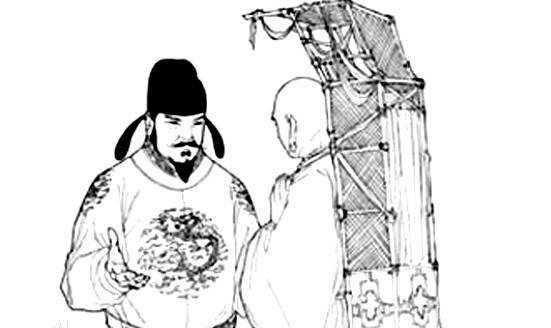
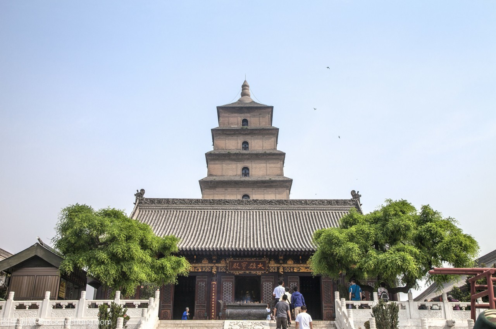
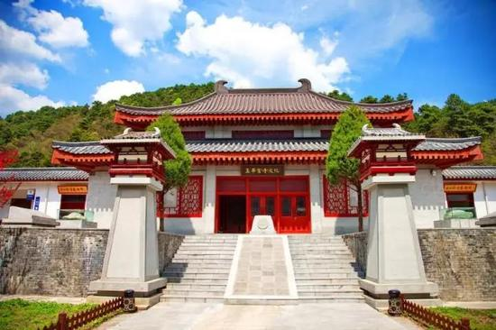
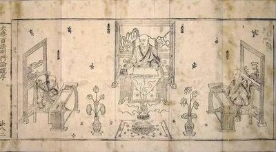

玄奘译场成立于唐太宗时代，结束于唐高宗时期。是唐代维持时间最长的一所译场。
玄奘于正月二十四日抵达京城长安，二月初一于洛阳仪鸾殿谒见唐太宗，三月一日返回长安，入住弘福寺，开始组织译场。

公元645-664这十九年间，玄奘“译场三迁”：从洪福寺到慈恩寺再到玉华宫。
玄奘住弘福寺的时间为：贞观十九年（公元645年）三月至贞观（公元648年）十二月，共计三年零九个月，期间，还随唐太宗去玉华宫避暑，居紫微殿弘法院译经。
玄奘住大慈恩寺的时间为：贞观二十二年（公元648年）十二月二十日至显庆三年（公元658年）七月。
贞观二十二年(648年)，太子李治为了纪念生母长孙皇后修建慈恩寺，玄奘被任命为第一任住持，译经场所迁往更为宏大的慈恩寺。 为保存由天竺带回长安的经卷佛像，玄奘法师主持修建了大雁塔。

显庆四年(659年)，玄奘自请前往玉华宫，落寞地度过了人生最后五年。玄奘住玉华寺的时间为显庆四年（公元659年）十月，至麟德元年（公元664年）二月。玄奘在玉华寺共翻译佛经682卷，并圆寂于此。

译场组织完善，翻译职司多。以《佛祖统纪》所载为例，九种职位如下:
1、译主:坐於正面宣述梵文，由通达显密二教者担任。为宣读经典原本，并讲解其意义者。这是译场的核心人物。
2、证义:坐在译主左侧，评量(审查)梵文，或判断译文正确与否，证已译出之文所诠之义。这是审查经典内容，判定其意义有无错误的工作，此职通常由多数人担任。
3、证文:也称证梵本。坐在译主右侧，审查译主所读梵文之正误。这是审核所翻译的语句是否契合梵文原语意义的工作，只有精通梵汉两语者方能胜任。
4、书字梵学僧:为听受梵文而将梵音如实写成汉字者。
5、笔受:将梵音翻译成汉文者。笔受者要求能精通华梵，通达空有二宗。
.
6、缀文:连缀文字以成句。这是将梵语意义写成汉文者，人员多时有好几名。
7、参译:对照梵文与汉文之正误者，称为参译，或称证梵语。
8、刊定:削删冗长之文以定句义。
9、润文:坐於南面，为润饰译文者。因为翻译如果仅能正确传达真意，还不能称为完美。只有译文典雅庄丽，才能令读者欢喜受持。所以任此职者，必须擅长修辞属文。人数不定。
另外，有的译场还有"度语"，也称"传语"。因为有时译主不懂华言，即由度语者将其讲述的外国语意义译成汉语。如唐代般若译《四十华严》时，由洛阳的广济担任译语。但译主若为华人，或外国人而精通汉语者，则一般不用"度语"。如鸠摩罗什、玄奘、义净，皆未用度语。除直接参与译经的人员以外，朝廷往往还派有"监护大使"，监护大使在翻译成后，担任监阅的职务，常由朝廷高官担任。这时其实已经不需要译文巧拙的审查，仅仅是一种荣誉监督。当某经典译成后，译主如果认为已经完善妥当，即交给监护大使，由监护大使上呈於朝廷，以供皇帝阅览。
